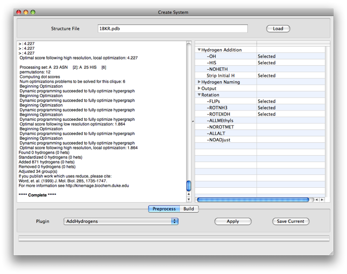

Adding Hydrogens
X-ray structures of pdbs normally do not include hydrogen atoms but these are required for correct simulations. This page explains how to use the AddHydrogens plugin to do this. Note: You must have previously installed this plugin and also the program reduce which it uses to perform the addition. See the bottom of this page for installation instructions.

To build a system:
- Load a pdb into the System Builder (see here)
- Click the Preprocess tab.
- Choose the AddHydrogens plugin.
- Set your desired values for the various options.
- See the AddHydrogens README for the more on the various options.
- Click Apply.
- The output pane fills with information on the addition process.
- The hydrogens are now added. Switch to the Build tab and build your system as normal
- To save a version of the pdb with the hydrogens click 'Save Current' .
- You can change options and apply the plugin as many times as you want before switching to the Build tab.